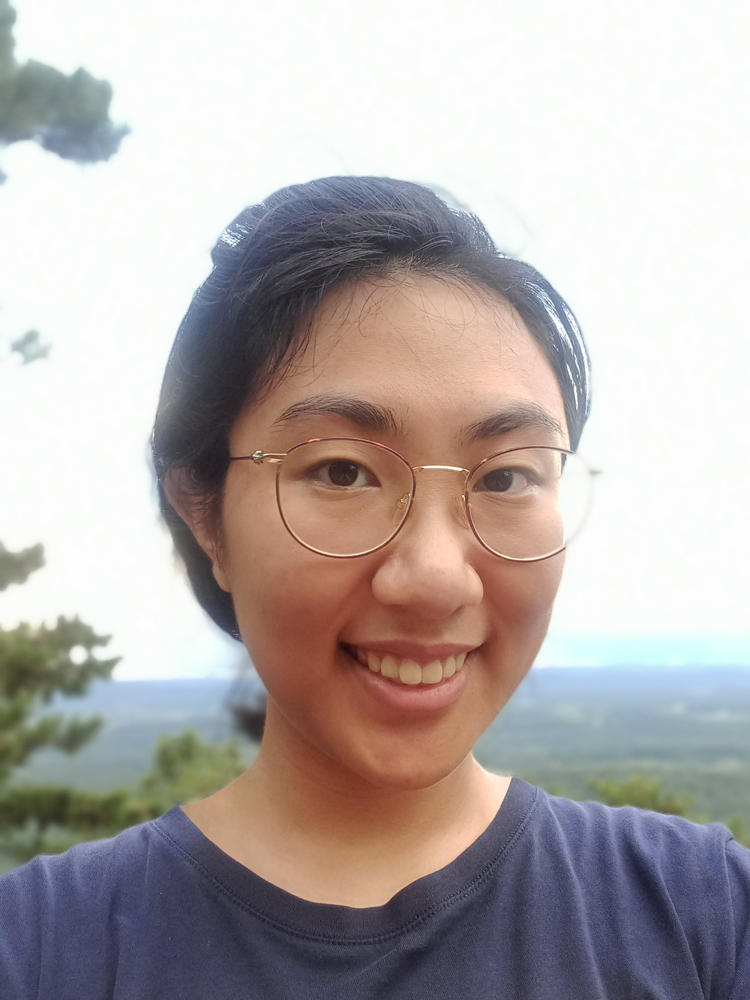
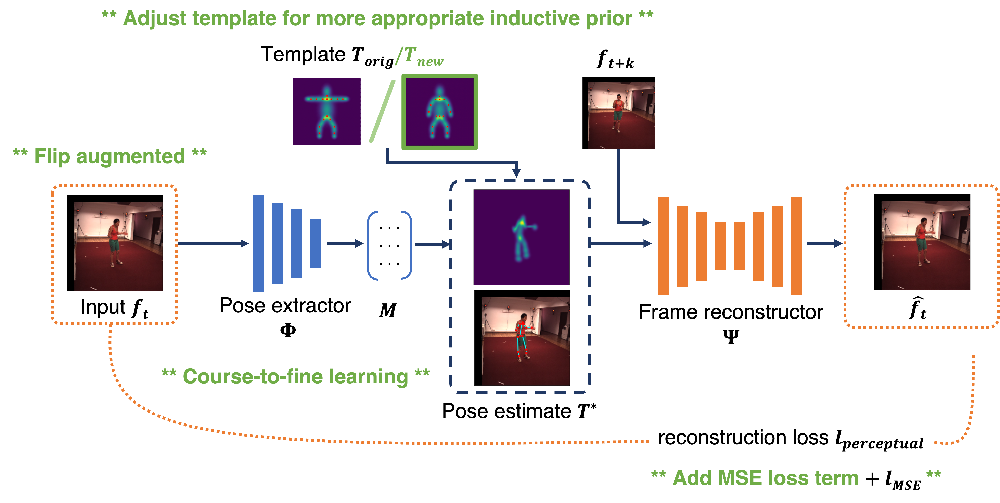
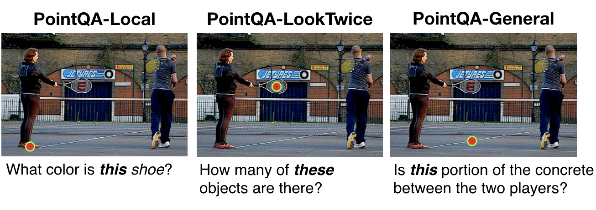
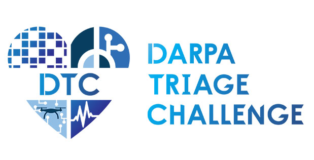
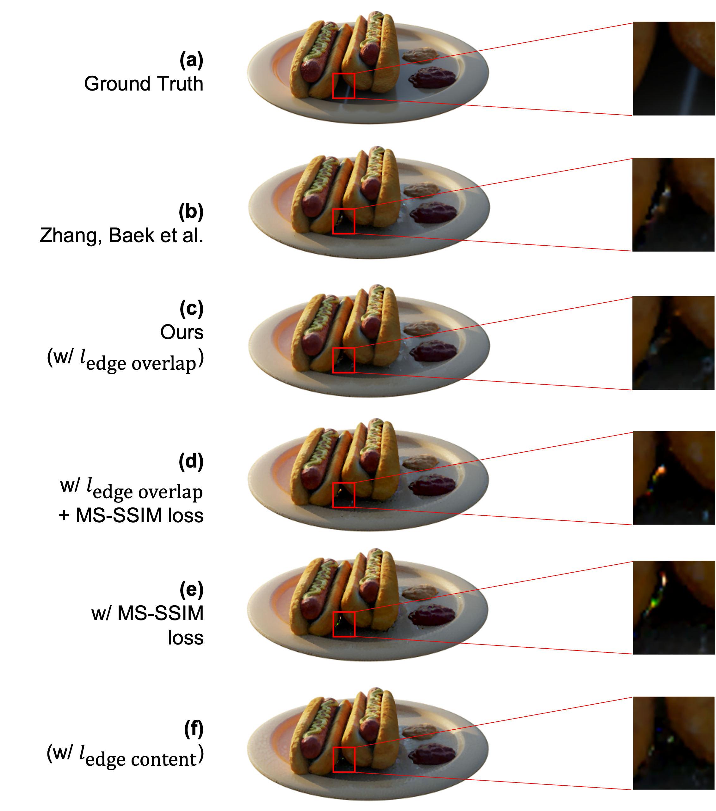
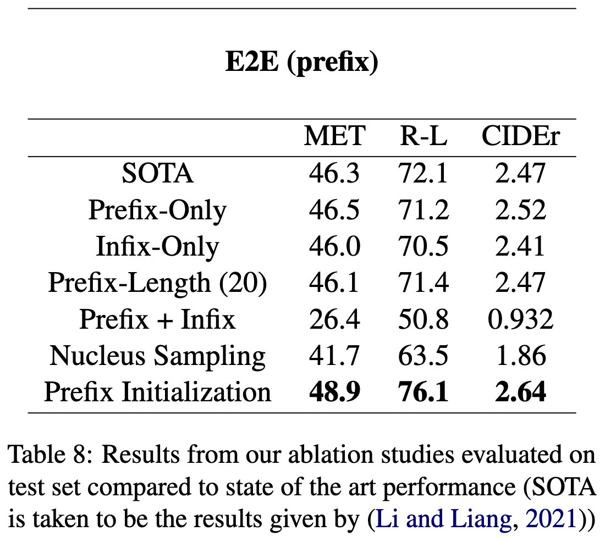
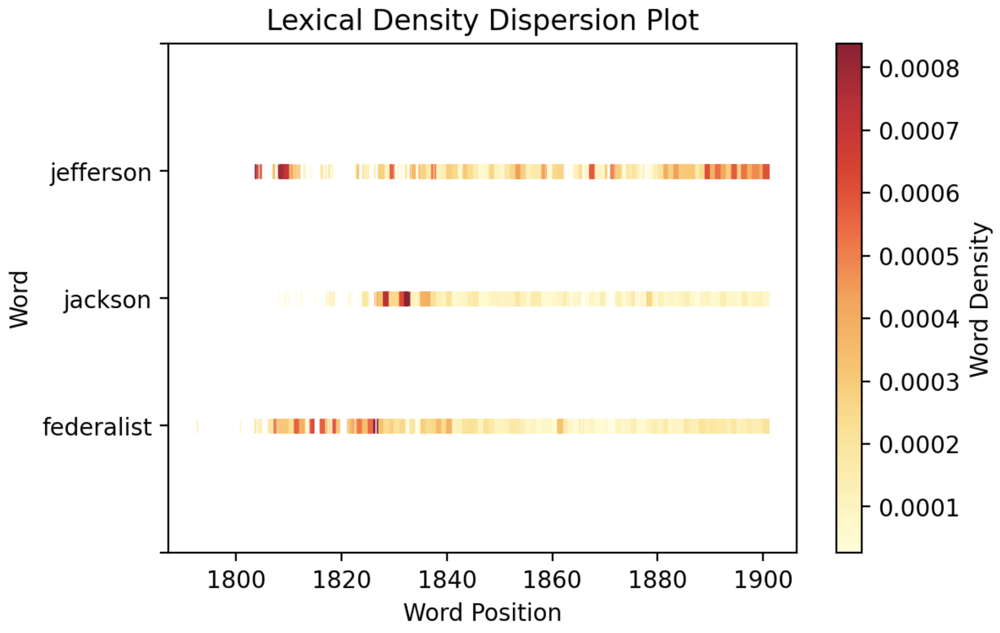
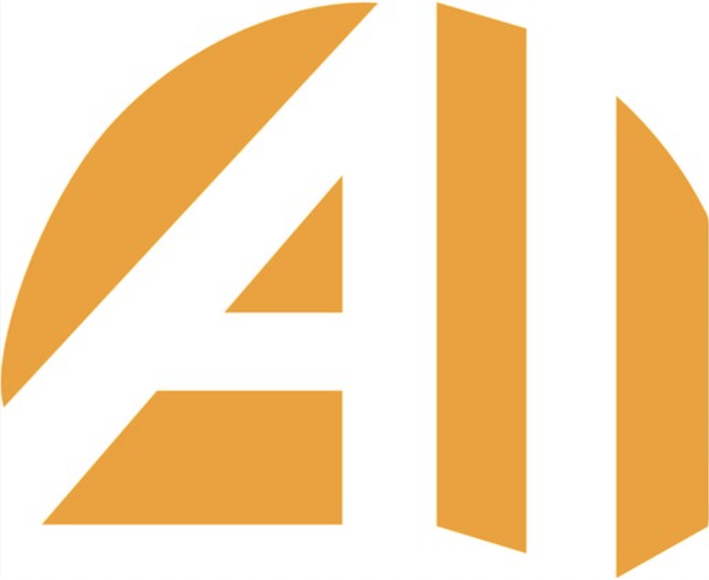
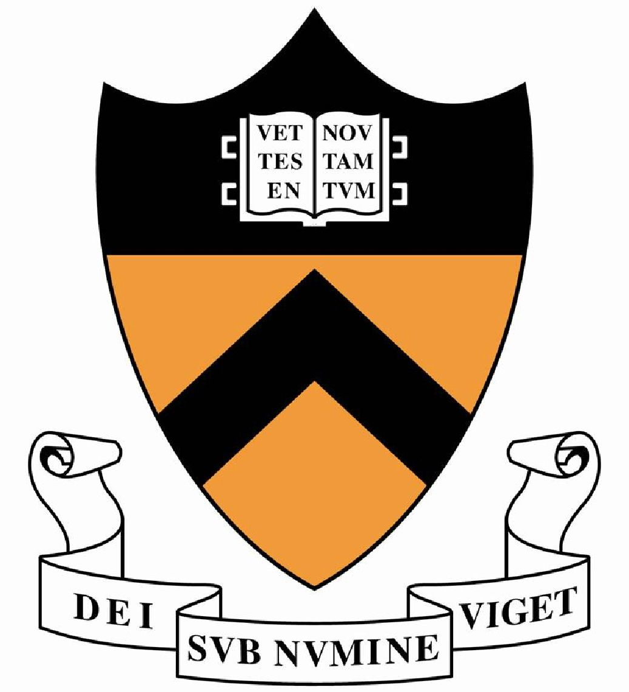
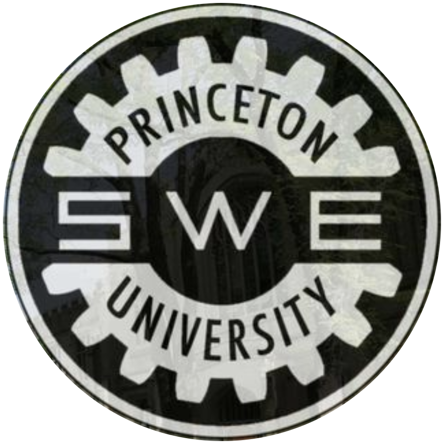

|
Nobline Yoo Hello! My name is Nobline, and I'm helping develop the DARPA Triage Challenge, using computer vision for effective medical triage in high-noise, diverse environments.
I graduated from Princeton University with a BSE in Computer Science and certificates in Statistics & Machine Learning and Robotics. I had the priviledge of working with Professor Olga Russakovsky in the Visual AI Lab. |
 |
News
|
Publications |
|

|
Efficient, Self-Supervised Human Pose Estimation with Inductive Prior Tuning
Nobline Yoo, Olga Russakovsky Proceedings of the IEEE/CVF International Conference on Computer Vision (ICCV) Workshops, 2023 [paper] [poster] [code] [video] We explore the pose estimation-reconstruction alignment task that is central to self-supervised learning in human pose estimation. We show that inductive-prior tuning helps coordinate pose learning alongside reconstruction and propose a new metric that measures limb length consistency in a no-labels setting. Our model outperforms the baseline using less than 30.3% the amount of training data. |
|

|
Point and Ask: Incorporating Pointing into Visual Question Answering
Arjun Mani, Nobline Yoo, Will Hinthorn, Olga Russakovsky Poster spotlight at Visual Question Answering (VQA) workshop at CVPR, 2021 [paper] [code] We introduce and motivate point input for VQA questions and propose benchmarks consisting of questions which require point input (e.g. What color is this book?). We find point supervision is more effective than verbal disambiguation. |
Research Projects |
|

|
Computer Vision for Medical Triage in High-Noise, Diverse Environments
Nobline Yoo, Johns Hopkins University Applied Physics Laboratory DARPA Triage Challenge (current work-in-progress) [project page] Currently helping develop the DARPA Triage Challenge. We are working on developing computer vision models to detect hemorrhage and respiratory distress for effective medical triage in high-noise, diverse environments. |
|

|
Perceptual Losses for Point-Based Neural Fields
Nobline Yoo, Felix Heide Neural Rendering (Grad) Course Project, Spring 2023 [paper] [code] We explore MS-SSIM and Canny edge-based losses for the novel view synthesis method proposed in Zhang et al. We show edge-based loss reduces spot artifacts with high levels of detail reconstruction. On a real-world scene from the LLFF dataset, we introduce a simple modification to Zhang et al. which yields a 4.68 point increase in PSNR. |
|

|
Prefix Tuning: Optimizing Large Language Models
Grace Wang*, Nobline Yoo*, Richard Zhu*, Karthik Narasimhan Natural Language Processing Course Project, Spring 2022 [paper] [poster] [code] Reproduced paper from ACL | IJCNLP 2021 Li and Liang. Conducted four additional ablation studies on prefix tuning for LLMs. Noticed a threshold prefix length (15 to 20) after which accuracy declines in a small dataset setting. Identified a prefix initialization that led to 2.6, 4.0, 0.17 point increase in METEOR, ROUGE-L, and CIDEr metrics from state of the art. |
|

|
Digital Humanities Tools as Sites of Human-Computer Interaction
Nobline Yoo, Brian Kernighan Junior Independent Work, Spring 2022 [paper] [code] [spotlight] [award] Created an analysis tool for the Chronicling America dataset, using word vector analysis and topic modeling, and identified digital humanities tools as sites of human-computer interaction, motivating the need for a new framework to maximize tool adoption. Awarded the Independent Work Award by the Princeton Center for Statistics and Machine Learning and featured by the Princeton Center for Digital Humanities. |
More Projects |

|
Drone: Navigating through Obstacles with Computer Vision
Introduction to Robotics, Fall 2022 [video] In a group of four, we programmed a drone to navigate an obstacle course using computer vision for obstacle and destination recognition. |
|
|
"A ship, we see, is not just a ship on the sea."
Nobline Yoo, Adele Goldberg Psychology of Language Course Paper, Spring 2021 [paper] A ship is a bowl on the ocean. But a ship also refers to "fortune," "opportunity," or even an "organization." We explore how the word "ship" has come to acquire its present set of meanings, as derived from its prototypical definition, focusing on the role that extended context plays in determining its place in our human mind map. Though unexplored in the essay, it would be very interesting to ponder the role of extended context in vision settings for creating a computer's "mind map" of objects and their relations with one another. |
Teaching & Outreach |
|

|
Princeton AI4ALL
Lead Instructor (Research Instructor in Summer 2019, 2020, 2021. Lead Instructor in 2023). Led and set vision for 11-person instructional team on machine learning curriculum development for high-school students from underrepresented backgrounds. Designed curriculum with focus on hands-on learning, social impact, and ethical design in four core projects: (1-2) computer vision for accessibility and rainforest conservation, (3) natural language processing for mental health, (4) robotics for environmental monitoring. Instructed cohorts of ~30 students each year. |
|

|
Undergraduate Course TA & Tutor
Undergraduate Course Grader, Princeton McGraw Center for Teaching & Learning Tutor (Fall 2022, Spring 2023)
COS333: Graded semester-long projects for Advanced Programming Techniques (COS333). |
|

|
Princeton Society of Women Engineers High School Engineering Colloquium
Panelist, 2023 Mentored high-school girls interested in STEM by answering questions about Princeton Engineering experience and giving advice for paving a path forward in engineering. |
|
Design and source code from John Barron |